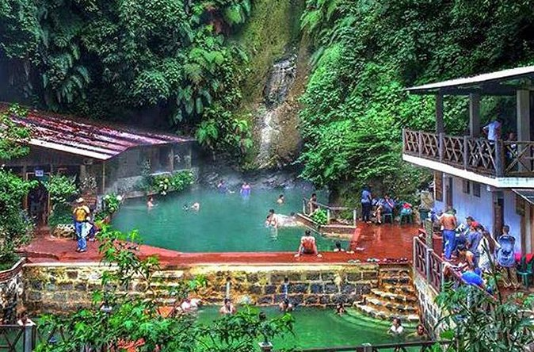

Fuentes Georginas es un conjunto de aguas termales naturales ubicadas en las montañas de Zunil, Quetzaltenango. Rodeadas de un denso bosque nuboso, estas fuentes ofrecen un espacio de relajación único en medio de la naturaleza.
Las piscinas de agua caliente están alimentadas por actividad volcánica, lo que convierte el lugar en un destino muy visitado tanto por turistas nacionales como extranjeros.
Ubicación: Zunil, departamento de Quetzaltenango.
Actividades: Relajarse en las aguas termales, disfrutar del entorno natural, senderismo por los alrededores, y visitas al mirador para vistas panorámicas.
